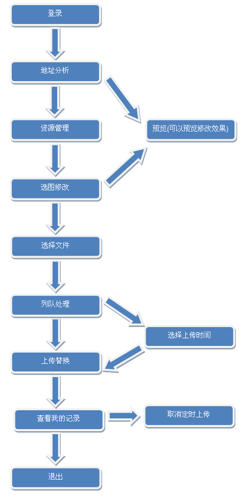

尚游资源管理系统使用说明
注意事项
·本系统只支持firefox浏览器，建议下载新版本
Firefox 。
·本系统只能在公司IP下访问，如果用户没有设置和查看相关内容的权限部分内容将不显示，登陆需使用admin后台帐号和尚方保剑。
·本系统支持设定的时间替换，比如设定在周末或者凌晨无需人职守便可自动替换，但注意如果服务器重启定时会失效，如遇到此类问题请联系相关技术人员解决。 建议不要设置太长时间的定时。
·本系统需要您电脑的本地系统时间为正确的北京时间，否则定时替换会出错，对比北京时间和本地时间可以访问
这里 。
·本系统只支持管理s.syyx.com和s1.syyx.com图片资源文件。通过地址分析后可以看到页面中所有的图片，选择需要修改的图片进行替换或者定时替换即可。
·替换某个图片之前，建议把线上这个原图片备份到您的电脑上，以备不时之需。
操作流程
